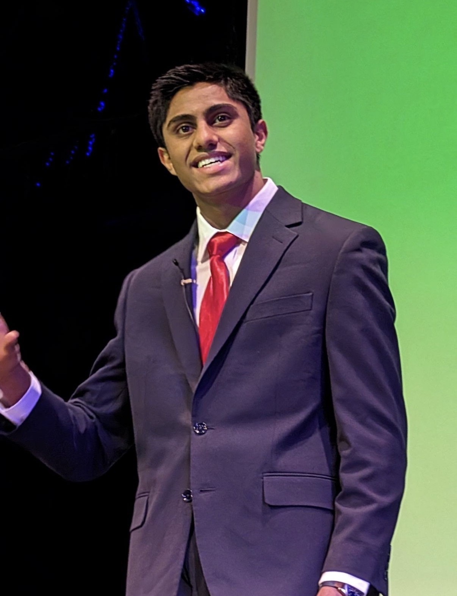

Our inaugural event featured 8 speakers — students, professionals, and industry leaders — each bringing a unique perspective to the theme of transformative change.
Sarah shares a powerful reflection on breaking free from external pressures and redefining identity on your own terms. She invites us to question who we are, and who we choose to be. Through her academic and personal experiences, Sarah explores how individuals navigate pressure, redefine success, and build a sense of self on their own terms.
Watch TalkJulia questions the narratives surrounding beauty today, exploring how they shape identity, self-worth, and perception. She invites us to rethink whether what we call empowerment is truly freedom, or something more complex. Through her research including her dissertation, Julia explores the intersection of beauty, perception, and mental health, bringing a critical and evidence-based perspective to widely accepted social norms.
Watch TalkWilder challenges the idea of waiting until you feel ‘ready,’ showing how action itself is what creates confidence. He reframes fear and uncertainty as the starting point, not the barrier, to growth. Alongside his academic work, Wilder engages in content creation and innovation-driven initiatives, exploring how mindset and action shape growth and opportunity.
Watch TalkJack questions whether achievement alone can ever truly fulfil us, challenging the belief that external milestones define our worth. He invites us to rethink what it really means to live a meaningful life. Jack is the host of The Grateful Podcast, a globally ranked show with over 120 episodes exploring mindset, success, and human potential.
Watch TalkGrace explores how our perceptions of difference can quietly shape the way we connect, often creating distance where there doesn’t need to be any. She invites us to look beyond these barriers and reconsider how we relate to one another. Active in Model United Nations, Grace engages in discussions around diplomacy, communication, and cross-cultural understanding.
Watch Talk
James explores how we form instant judgments, and how these ‘completion moments’ lead us to reduce people to assumptions rather than understanding their full complexity. He challenges us to pause, question our certainty, and resist the instinct to finish someone else’s story too soon.
Dr. Asif reveals how fear silences voices and how a lack of diversity limits our ability to meet a global market. He challenges leaders to create spaces where every perspective drives better decisions. With extensive experience in leadership and inclusion, Asif works at the intersection of business, culture, and social impact within one of the world’s leading media organisations.
Watch TalkSulayman explores how taking chances on the unexpected can open doors you never imagined. He challenges us to step beyond hesitation and trust where bold decisions can lead. Through his work at Bott and Co, a UK firm specialising in consumer claims, he’s building a strong foundation in analytical thinking, problem-solving, and professional practice.